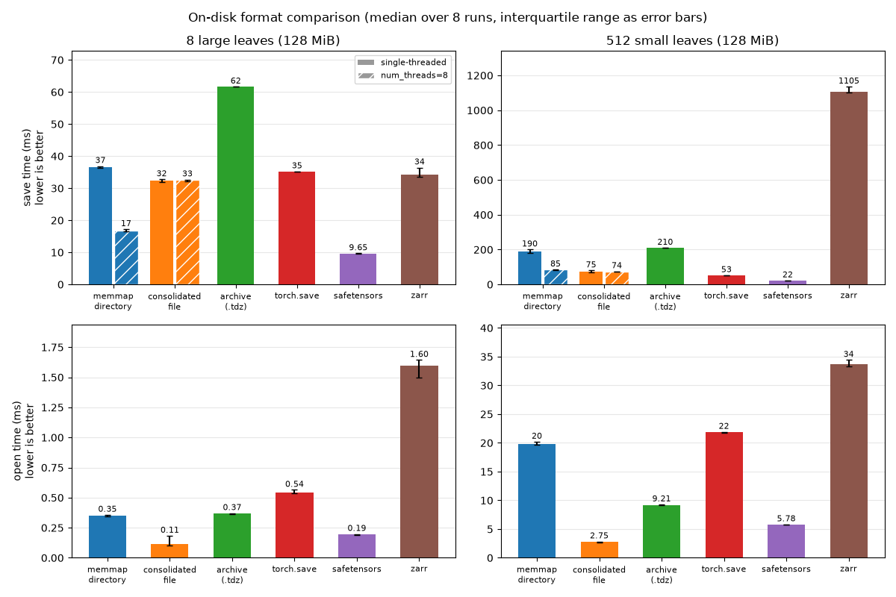

Save and load tensordicts#
save() writes each tensor of a tensordict
(each leaf) to its own file, in a directory tree that follows the keys.
load_memmap() maps the files back into
memory, and reads a leaf from disk only when you use it. Here, one call saves
the state of 100 particles:
>>> import tempfile
>>> from pathlib import Path
>>> import torch
>>> from tensordict import TensorDict
>>> tmp = tempfile.TemporaryDirectory()
>>> root = Path(tmp.name)
>>> particles = TensorDict(
... {"pos": torch.zeros(100, 3), "vel": torch.ones(100, 3)}, batch_size=[100]
... )
>>> _ = particles.save(root / "particles")
>>> loaded = TensorDict.load_memmap(root / "particles")
>>> loaded[0]["vel"]
MemoryMappedTensor([1., 1., 1.])
The examples on this page run in order, and share the temporary directory
root.
Choose a format#
To do this |
Use |
Section |
|---|---|---|
Save a model checkpoint, then load all of it or one sub-module |
||
Give the data to someone as one file that loads lazily |
|
|
Open or pickle the data in the shortest time |
||
Give the file to code that calls |
||
Give the tensors to code that expects a flat state dict |
||
Load a file that you did not write |
|
|
Preallocate a dataset on disk and fill it one sample at a time |
||
Store chunked, compressed, or remote data (HDF5, zarr, Redis) |
Save a checkpoint#
To save a model, collect its parameters and buffers with
from_module(). The result has one nested
tensordict for each sub-module:
>>> from torch import nn
>>> _ = torch.manual_seed(0)
>>> model = nn.Sequential(nn.Linear(3, 4), nn.ReLU(), nn.Linear(4, 2))
>>> params = TensorDict.from_module(model)
>>> _ = params.save(root / "checkpoint")
>>> sorted(p.name for p in (root / "checkpoint").iterdir())
['0', '2', 'meta.json']
To load the checkpoint into a model, read it with load_memmap, and call
to_module() with inplace=True. It copies
each value into the existing parameter of the model, so the parameters stay
Parameter instances in memory:
>>> new_model = nn.Sequential(nn.Linear(3, 4), nn.ReLU(), nn.Linear(4, 2))
>>> loaded = TensorDict.load_memmap(root / "checkpoint")
>>> _ = loaded.to_module(new_model, inplace=True)
>>> torch.equal(new_model[0].weight, model[0].weight)
True
The loaded leaves are MemoryMappedTensor instances.
Without inplace=True, to_module makes a new parameter from each of
them, and the new parameter uses the file as its storage. If the files are
mapped as shared (mode="r+", the default for a directory that you can
write), a change to the parameter, for example an optimizer step, changes
the checkpoint on disk.
To load one sub-module, pass its key as subpath. tensordict then reads
only that part of the tree. subpath takes a nested key, such as
("encoder", "0"), or a path, such as "encoder/0":
>>> last_layer = TensorDict.load_memmap(root / "checkpoint", subpath="2")
>>> _ = last_layer.to_module(new_model[2], inplace=True)
>>> last_layer["weight"].shape
torch.Size([2, 4])
To read the keys, shapes, and dtypes of a checkpoint without its data, load
it on the "meta" device:
>>> TensorDict.load_memmap(root / "checkpoint", device="meta")["0", "weight"]
tensor(..., device='meta', size=(4, 3))
Options of save and load_memmap#
The methods have several names:
save(),dumps(), andmemmap()are one method. They return a new tensordict with memory-mapped leaves.memmap_()writes the same files, and replaces the leaves of the tensordict itself.load()andload_memmap()are one method.
memmap, memmap_, and save lock the tensordict that they return,
except when memmap or save writes a .tdz archive.
You can write into its tensors in place, but you cannot add, remove, or
replace an entry (see Locking and temporary changes).
To write several files at the same time, pass num_threads. Threads make
the save faster when the tensordict has a few large leaves, and slower when
it has many small ones. In one measurement, num_threads=4 saved the
weights of torch.nn.Transformer (184 leaves, 168 MiB) 1.6 times as
fast as one thread, and saved 2000 small leaves 3 times as slowly. Measure
both on your data.
If you do not give a path, memmap and memmap_ put each tensor in an
anonymous temporary file. On Linux, the file is in shared memory
(/dev/shm) if it has room. The file has no name, so load_memmap
cannot read it, and the data disappears when the process ends. Use this to
share data between processes (see Load data and share it between processes).
Tensors that already have a file#
If a leaf is already a memory-mapped tensor, memmap without a path keeps
the same tensor:
>>> td = TensorDict({"a": 1}, [])
>>> td0 = td.memmap()
>>> td1 = td0.memmap()
>>> td0["a"] is td1["a"]
True
If you give another path, memmap raises an error, so that you do not copy
a large file by accident. To copy the file, pass copy_existing=True:
>>> td0 = td.memmap(root / "first")
>>> td1 = td0.memmap(root / "second")
Traceback (most recent call last):
...
RuntimeError: A filename was provided but the tensor already has a file associated (...). To copy the tensor onto the new location, pass copy_existing=True.
>>> td1 = td0.memmap(root / "second", copy_existing=True)
>>> TensorDict.load_memmap(root / "second")["a"]
MemoryMappedTensor(1)
Write to the files after you load them#
The mode argument of load_memmap sets where an in-place change to a
loaded tensor goes:
Default (
mode=None): if the process can write the file, in-place writes go to the file. If it cannot, the file loads as with"r".mode="r": the files are mapped copy-on-write. In-place writes stay in memory, and the files do not change.mode="r+": in-place writes go to the files. If a file is not writable,load_memmapraises aPermissionError.
Here, the reader with mode="r" changes memory only, and the writer with
the default mode changes the file:
>>> _ = TensorDict({"a": torch.zeros(3)}, batch_size=[3]).save(root / "data")
>>> reader = TensorDict.load_memmap(root / "data", mode="r")
>>> _ = reader["a"].add_(1)
>>> TensorDict.load_memmap(root / "data")["a"]
MemoryMappedTensor([0., 0., 0.])
>>> writer = TensorDict.load_memmap(root / "data")
>>> _ = writer["a"].add_(1)
>>> TensorDict.load_memmap(root / "data")["a"]
MemoryMappedTensor([1., 1., 1.])
If many nodes read the same files on a network file system, load with
mode="r". On some of these file systems (for example Lustre), a page
fault on a shared writable mapping takes a write lock. Readers on
different nodes then block each other. On Linux, a copy-on-write mapping
counts against the memory commit limit. If a file is larger than RAM plus
swap, mode="r" can fail to map it. In that case, use the default mode.
Save to one file#
A directory has one file for each leaf. To write one file instead, use an
archive, a consolidated file, or torch.save():
Format |
Write, then read |
Lazy load |
Load one sub-tree |
Use it to |
|---|---|---|---|---|
Archive ( |
|
Yes |
Yes ( |
Give a checkpoint or a dataset to other people, or copy it to a network file system |
Consolidated file |
|
Yes |
No |
Open the data in the shortest time |
|
|
With |
No |
Give the data to code that calls |
Single-file archives#
If the path ends with ".tdz", or if you pass archive=True,
save() (and memmap and dumps) writes
one file instead of a directory. This example saves a triangle mesh with a
temperature field on its vertices:
>>> mesh = TensorDict(
... {
... "vertices": torch.rand(10, 3),
... "faces": torch.randint(10, (16, 3)),
... "fields": {"temperature": torch.rand(10)},
... },
... )
>>> _ = mesh.save(root / "mesh.tdz")
>>> loaded = TensorDict.load_memmap(root / "mesh.tdz")
>>> (loaded == mesh).all()
True
The archive is a standard zip file. Its entries are the files of the
directory tree (the meta.json files and the *.memmap tensor files).
The tensor payloads are aligned and not compressed, so load_memmap maps
the archive once and makes each leaf a view into the mapping. Apart from
the metadata, tensordict reads a tensor from disk only when you use it.
Because the entries are the directory tree, you can convert an archive to a
directory and back, with pack_memmap() and
unpack_memmap() or with any zip tool:
unzip data.tdz -d data_dir # gives a directory that load_memmap reads
(cd data_dir && zip -0 -r ../data.zip .) # gives an archive that load_memmap reads
subpath works as with a directory. tensordict then reads only that part
of the archive:
>>> TensorDict.load_memmap(root / "mesh.tdz", subpath="fields")["temperature"].shape
torch.Size([10])
An archive loads differently from a directory in two ways:
By default, the leaves are views into one storage, as with
from_consolidated(). In-place writes change memory only, not the file. To write to the file, load withmode="r+".An archive made by another zip tool loads correctly. If a payload is not aligned, tensordict copies that leaf into memory instead of making a view.
This example writes zeros to the archive through mode="r+":
>>> mesh_rw = TensorDict.load_memmap(root / "mesh.tdz", mode="r+")
>>> _ = mesh_rw["vertices"].zero_()
>>> TensorDict.load_memmap(root / "mesh.tdz")["vertices"].sum()
tensor(0.)
An in-place write does not update the CRC-32 checksum that the zip format
stores for each entry. load_memmap does not read the checksums. Before
you give a changed archive to a tool that reads them, such as unzip or
unpack_memmap(), call
refresh_archive_checksums():
>>> from tensordict import refresh_archive_checksums
>>> _ = refresh_archive_checksums(root / "mesh.tdz")
To compress an archive, pass compression="deflate", "bzip2", or
"lzma". tensordict cannot memory-map a compressed leaf. It decompresses
the leaf into memory the first time you use it, and mode="r+" raises an
error. Use compression for archival storage. uint8 images and boolean
masks compress well, and float weights do not.
Consolidated files#
consolidate() copies all the leaves into one
contiguous storage, and makes each leaf a view into it. With a file name, the
storage is a memory-mapped file. from_consolidated() opens
the file again. This example saves a graph with four nodes and three edges:
>>> from tensordict import from_consolidated
>>> graph = TensorDict(
... {
... "nodes": torch.zeros(4, 8),
... "edges": {"index": torch.tensor([[0, 1, 2], [1, 2, 3]]), "weight": torch.ones(3)},
... },
... )
>>> graph_c = graph.consolidate(root / "graph.bin")
>>> from_consolidated(root / "graph.bin")["edges", "index"]
tensor([[0, 1, 2],
[1, 2, 3]])
The file keeps the batch sizes and names that the tensordict had when
consolidate wrote it. If you change them on graph_c later, call
graph_c.consolidate(root / "graph.bin") again to write them into the file.
consolidate returns a locked tensordict. If you unlock it with
unlock_(), it is no longer consolidated:
>>> graph_c.is_locked, graph_c.is_consolidated()
(True, True)
>>> graph_c.unlock_().is_consolidated()
False
A consolidated tensordict also pickles faster, because pickle gets one
storage instead of one tensor for each leaf. In one measurement, pickling a
tensordict with 1000 small leaves took 34 ms, and 0.3 ms once consolidated
(consolidate() itself took 9 ms). Distributed tensordicts uses the same
layout to send a tensordict as one message. See
consolidate() for its other options
(num_threads, device, pin_memory, share_memory).
torch.save and torch.load#
torch.load() reads a tensordict that torch.save() wrote, with
weights_only=True (the default since PyTorch 2.6). When you import
tensordict, it allowlists the classes and functions that these files
reference, with torch.serialization.add_safe_globals(). The list covers
TensorDict, LazyStackedTensorDict,
consolidated tensordicts, non-tensor values made of Python builtins, such
as strings, numbers, lists, and dicts, and the torch.return_types that
max(dim=...), min(dim=...), cummax and cummin return:
>>> batch = TensorDict({"loss": torch.zeros(3), "meta": {"split": "train"}}, batch_size=[3])
>>> torch.save(batch, root / "batch.pt")
>>> torch.load(root / "batch.pt", weights_only=True)["meta", "split"]
'train'
The list does not include tensorclasses, or the types of other non-tensor
values, such as NumPy arrays or dates. For these, loading stops with an
Unsupported global error that names the missing class or function:
>>> import datetime
>>> from tensordict import NonTensorData
>>> td = TensorDict({"date": NonTensorData(datetime.date(2024, 1, 1))})
>>> torch.save(td, root / "date.pt")
>>> torch.load(root / "date.pt", weights_only=True)
Traceback (most recent call last):
...
_pickle.UnpicklingError: Weights only load failed...Unsupported global: GLOBAL datetime.date was not an allowed global by default...
If the file comes from a source that you trust, allowlist the class. For a tensorclass, allowlist the tensorclass:
>>> with torch.serialization.safe_globals([datetime.date]):
... td = torch.load(root / "date.pt", weights_only=True)
>>> td["date"]
datetime.date(2024, 1, 1)
weights_only=True cannot load a tensordict with
MemoryMappedTensor leaves. Save it with
save() and load it with
load_memmap() instead.
state_dict and load_state_dict#
state_dict() and
load_state_dict() follow the conventions of
torch.nn.Module.state_dict(). By default, state_dict() returns a
flat OrderedDict with dot-separated keys, as
nn.Module does:
>>> td = TensorDict({"a": 1, "b": {"c": 2}}, [])
>>> sd = td.state_dict()
>>> dict(sd)
{'a': tensor(1), 'b.c': tensor(2)}
The metadata (batch_size, device) is in the _metadata attribute of
the returned OrderedDict, as in nn.Module. It has one entry for each
dot-separated prefix: "" for the root, and "b" for the nested
tensordict at key "b". It replaces the old __batch_size and
__device keys.
To get a nested state dict, pass flatten=False:
>>> sd_nested = td.state_dict(flatten=False)
>>> {key: dict(value) if isinstance(value, dict) else value for key, value in sd_nested.items()}
{'a': tensor(1), 'b': {'c': tensor(2)}}
load_state_dict reads each of the three formats: flat (with
_metadata and dot-separated keys), nested (with _metadata at each
level), and the old format (with __batch_size and __device keys):
>>> td_zero = td.clone().zero_()
>>> _ = td_zero.load_state_dict(sd)
>>> (td_zero == td).all()
True
>>> _ = td_zero.zero_().load_state_dict(sd_nested)
>>> (td_zero == td).all()
True
For a tensorclass, the keys of state_dict() are the names of the tensor
fields. The non-tensor fields are in _metadata:
>>> from tensordict import tensorclass
>>> @tensorclass
... class Labeled:
... x: torch.Tensor
... label: str
>>> sd = Labeled(x=torch.randn(3), label="hello", batch_size=[]).state_dict()
>>> list(sd.keys())
['x']
>>> sd._metadata[""]["_non_tensor"]
{'label': 'hello'}
Load data that you did not write#
Pickle can run any code when it loads a file. tensordict uses pickle in two
places on disk: the other.pickle files of a saved directory or archive,
and torch.save() files.
Non-tensor values, such as strings, are in
NonTensorData entries or in tensorclass fields (see
Non-tensor data and unbatched entries). When you save them, tensordict writes the values that
JSON can represent to meta.json, and the other values to an
other.pickle file next to it:
>>> run = TensorDict(
... {
... "x": torch.zeros(3),
... "config": NonTensorData({"lr": 0.1}),
... "date": NonTensorData(datetime.date(2024, 1, 1)),
... },
... batch_size=[3],
... )
>>> _ = run.save(root / "run")
>>> sorted(p.name for p in (root / "run" / "config").iterdir())
['meta.json']
>>> sorted(p.name for p in (root / "run" / "date").iterdir())
['meta.json', 'other.pickle']
The allow_pickle argument of load_memmap sets whether tensordict loads
the other.pickle files:
allow_pickle=False: if the data has a pickle file,load_memmapraises aRuntimeError. Use this for data from a source that you do not trust.allow_pickle=True:load_memmaploads the pickle files. Use this only for data from a source that you trust.No value: tensordict 0.14 and 0.15 load the pickle files and emit a
FutureWarning. The default changes toFalsein tensordict 0.16.
The date value of the example above is in a pickle file:
>>> TensorDict.load_memmap(root / "run", allow_pickle=False)
Traceback (most recent call last):
...
RuntimeError: Refusing to load pickled non-tensor data from a memory-mapped TensorDict. ...
>>> TensorDict.load_memmap(root / "run", allow_pickle=True)["date"]
datetime.date(2024, 1, 1)
Data without a pickle file loads with allow_pickle=False. So does the
output of from_pytree(), such as a module
state_dict(), when its containers are only dict,
collections.OrderedDict, list and tuple: tensordict pickles these
classes for older versions, and also saves their names in a
json_types.json file, which load_memmap reads instead of the pickle
file. Other classes, such as namedtuples, and the stacked results of
from_pytree (for example after torch.stack()) load only from the
pickle file. load_memmap_ and memmap_refresh_ take the same
argument. For torch.load(), keep weights_only=True and allowlist
only the classes that you trust (see torch.save and torch.load).
A module state_dict() round-trips this way:
>>> model = torch.nn.Linear(2, 2)
>>> _ = TensorDict.from_pytree(model.state_dict()).memmap(root / "model")
>>> sd = TensorDict.load_memmap(root / "model", allow_pickle=False).to_pytree()
>>> all(torch.equal(sd[k], v) for k, v in model.state_dict().items())
True
The state dicts of an optimizer and of a learning-rate scheduler hold
None, str values and Python numbers, which from_pytree rejects
(None and str leaves) or returns as tensors (numbers). Save them with
torch.save() and load them with torch.load(path, weights_only=True),
which round-trips them exactly without unpickling arbitrary objects:
>>> optim = torch.optim.Adam(model.parameters(), lr=1e-3)
>>> model(torch.randn(3, 2)).sum().backward()
>>> optim.step()
>>> torch.save(optim.state_dict(), root / "optim.pt")
>>> optim_sd = torch.load(root / "optim.pt", weights_only=True)
>>> optim_sd["param_groups"] == optim.state_dict()["param_groups"]
True
>>> optim_sd["param_groups"][0]["foreach"] is None
True
>>> torch.optim.Adam(model.parameters()).load_state_dict(optim_sd)
The zarr backend has a separate, additive allow_pickle read policy on
from_zarr and PersistentTensorDict. False rejects pickle before
decoding; True permits it for trusted data; the current default,
None, reads it with a FutureWarning only when a pickled field is
accessed. Starting with TensorDict 0.17, the default will change to
allow_pickle=False for zarr. This does not change the memory-mapped
loader’s 0.16 schedule. Tensor and JSON zarr entries need no opt-in.
See zarr for the policy of newly written stores.
tensordict also protects the paths that it writes:
If the path of a new leaf file is a symbolic link, tensordict raises an error. It cannot stop another process that renames files in the parent directory at the same time. Keep the save directory, or the parent directory of an archive, writable only by users that you trust. Use
tempfile.TemporaryDirectoryor another private directory, not a fixed name in a shared/tmp.tensordict encodes the keys so that every file stays inside the save directory, also for keys that contain
/or...robust_key=Falseturns this off for old layouts. Do not use it with keys or metadata that you do not trust.A save overwrites a leaf file that exists. To get an error instead, call
memmapwithexistsok=False:savehas noexistsokargument.memmapstill rewrites the metadata files of a directory that it reuses.
Two other features unpickle what they receive: the Redis backend of
TensorDictStore (see Share data between nodes with Redis) and the
metadata of the torch.distributed methods (see
Collectives).
The directory layout#
The directory tree follows the keys: each leaf is a *.memmap file, and
each nested tensordict is a sub-directory. The meta.json file of each
directory holds what load_memmap needs to rebuild that level: the batch
size, the device, the shape and dtype of each leaf, the class of the
tensordict, and the non-tensor values that JSON can represent:
>>> td = TensorDict({"a": torch.rand(10), "b": {"c": torch.rand(10)}}, [10])
>>> _ = td.memmap_(root / "tree")
>>> sorted(str(p.relative_to(root / "tree")) for p in (root / "tree").rglob("*"))
['a.memmap', 'b', 'b/c.memmap', 'b/meta.json', 'meta.json']
Because meta.json stores the class of each level, load_memmap rebuilds
nested structures whose levels have different types, such as a tensorclass
inside a TensorDict or a stack of tensordicts:
>>> td_list = [TensorDict({"item": i}, batch_size=[]) for i in range(4)]
>>> @tensorclass
... class Record:
... data: torch.Tensor
... metadata: str
>>> data = TensorDict(
... {
... "td_list": torch.stack(td_list),
... "record": Record(torch.randn(3), metadata="some text", batch_size=[]),
... },
... )
>>> _ = data.memmap_(root / "mixed")
>>> loaded = TensorDict.load_memmap(root / "mixed")
>>> type(loaded["record"]) is Record
True
>>> loaded["record"].metadata
'some text'
print_directory_tree() logs the tree and its size
through the tensordict logger, and returns it as a string.
JSON cannot represent a set, so save writes a set value to an
other.pickle file. To load it, pass allow_pickle=True (see
Load data that you did not write). To keep the value in meta.json,
convert it to a list first.
Memory-mapped tensors#
A MemoryMappedTensor is a tensor whose data is in a file
on disk. It has constructors like those of torch, such as empty,
zeros, and from_tensor, and tensordict manages the file. Use it:
To work with contiguous data that is larger than the memory.
To send data to other processes. If all the processes can read the same file, a memory-mapped tensor is sent as a file name and the metadata to rebuild it. An indexed memory-mapped tensor is sent the same way if its storage is still that of the original tensor.
To read a few items. Indexing reads only those items, which is faster than opening many separate files.
Apart from its file, you create and index a memory-mapped tensor like a regular tensor:
>>> from tensordict import MemoryMappedTensor
>>> images = MemoryMappedTensor.empty(
... (100, 3, 64, 64), dtype=torch.uint8, filename=root / "images.memmap"
... )
>>> mini_batch = images[:10] # a view on the first 10 images
>>> # open the file again, here or in another process
>>> images = MemoryMappedTensor.from_filename(
... root / "images.memmap", dtype=torch.uint8, shape=(100, 3, 64, 64)
... )
>>> images.shape
torch.Size([100, 3, 64, 64])
Speed#
All the formats that this page describes, and safetensors, load lazily
through mmap. Reading all the data takes about the same time with each
of them. The differences come from a cost for each leaf, so they grow with
the number of leaves. In one run of
benchmarks/scripts/serialization_formats_bench.py with 100 MB of data:
Open: a single file parses one metadata block, and a directory opens one file for each leaf. With 2000 leaves, opening took 122 ms for a directory, 50 ms for an archive, and 13 ms for a consolidated file.
Save: a directory save is the fastest. With 8 leaves, an archive took 25 times as long as a directory (845 ms and 34 ms). With 2000 leaves, it took 3.4 times as long.
Copy: a directory has a cost for each file, and on a network file system this cost grows with the round-trip time. With 2000 leaves, copying a directory took 112 ms, and copying a single file took 34 to 51 ms.
zarr (
to_zarr()) does not memory-map, and costs one round trip to the store for each leaf. zarr gives its numbers.
The benchmark measures torch.save and safetensors on their fastest path:
a flat dict of tensors, loaded with
torch.load(mmap=True, weights_only=True) and with the memory-mapped
loader of safetensors. Neither format stores the tensordict structure: the
benchmark flattens the keys before the save, and nests them again after the
load.
The figure comes from the serialization speed tutorial, which runs when this documentation is built. Download its script to measure your own machine.

Save time (single-threaded and multithreaded) and open time for each format and layout, on the machine that built this documentation. Lower is better. Each bar is the median of 32 runs, and the error bars show the interquartile range. Hatched bars are multithreaded saves.#
See also#
Large datasets and storage backends: preallocate a dataset on disk, and the HDF5, zarr, and Redis backends.
Load data and share it between processes: read a saved dataset with a
DataLoader, and share it between processes.The reference of
memmap(),load_memmap(),consolidate(), andMemoryMappedTensor, and the saving methods in Saving, loading, and file formats.Tutorials: Devices and memory-mapped tensors and Benchmarking TensorDict serialization speed.